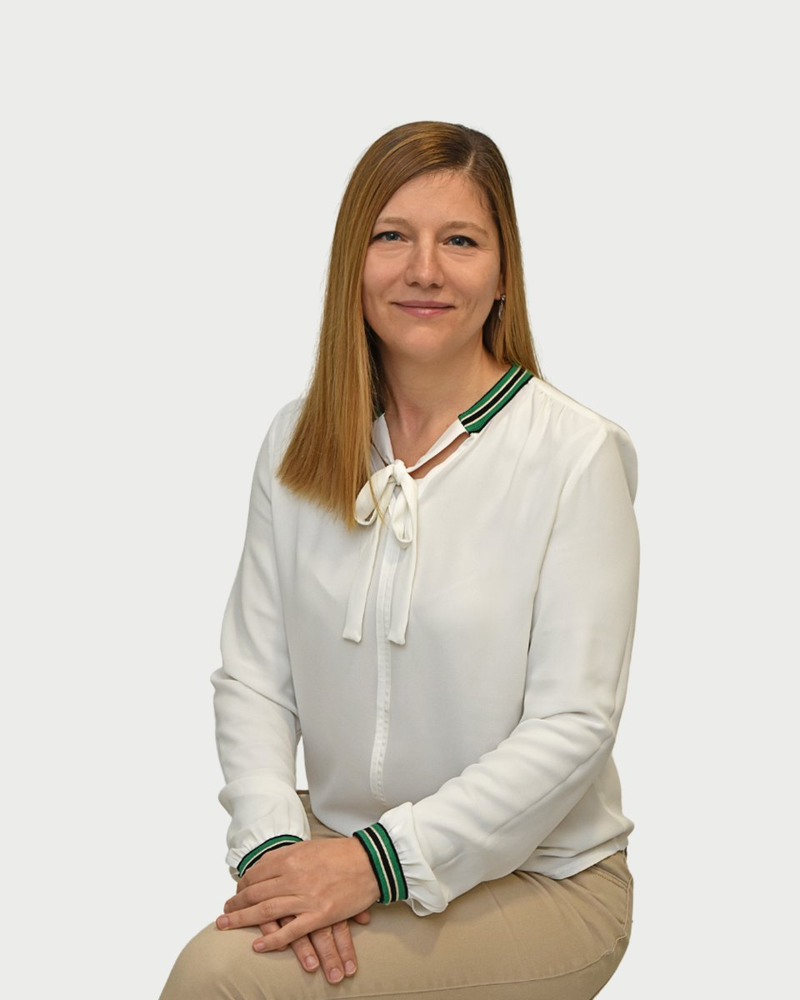

Regiszter 30 · Klinikai szakpszichológus
Szabó Brigitta
Amiben segítek
Szabó Brigitta saját megfogalmazásában. Ha a listában nem találja a saját helyzetét, az első beszélgetésen ezt is megbeszélik.
- Önértékelési nehézségek
- Stresszkezelés
- Szorongásos panaszok, pánik
- Serdülőkori krízis
- Gyász
- Párkapcsolati, családi nehézségek
- Evészavarok
- Alvászavarok
- Hangulati problémák
- Önsértés
- Pszichoszomatikus panaszok
- Indulatkezelési nehézségek
Bemutatkozás
Szabó Brigitta saját szavaival. Egy alkalom díja 18-25 ezer forint. A díjakról
Szabó Brigitta vagyok, pszichológus, klinikai- és mentálhigiéniai gyermek- és ifjúsági szakpszichológus, pár-, családterapeuta illetve analitikusan orientált gyermekterapeuta jelölt.
Szakmai munkám mellett folyamatosan képzem magam, hogy minél szélesebbkörű szakmai tudást elsajátítva holisztikus módon, a különböző pszichoterápiás módszereket integratívan alkalmazva a lehető leghatékonyabb segítséget nyújthassam a hozzám forduló kliensek számára.
Egyszerű, mégis nehéz elfogadni a valóságot olyannak, amilyen. pedig csak kiindulópont az elfogadás, ahonnan elrugaszkodva küzdeni lehet egy másféle valóságért." Jorge Bucay
A klienseimhez elfogadó, értő figyelemmel fordulok, amely segíti őket abban, hogy aktuális állapotukra, körülményeikre az eddigiektől eltérő szemszögből tekinthessenek és így olyan megküzdési módszereket alkalmazhassanak, amelyek megoldást jelentenek problémáikra.
Hiszem, hogy mindenki rendelkezik a nehézségek leküzdéséhez szükséges lelki eszközökkel, akkor is, ha egy érzelmileg megterhelő helyzetben egy ideig nem találja saját belső erőforrásait. A nehézségek megoldásához vezető úton az első nagy lépés a szakember felkeresése. Az ezt követő közös munkába fektetett energia meghozza gyümölcsét és erősebbé, kiegyensúlyozottabbá, nyitottabbá válhat általa.
Hitvallás
Képzés és szakmai út
12 tétel. A képzések és a szupervízió az akkreditált szakképzőhely rendjében folynak. Mit jelent ez Önnek
Szakirányú megszerzett végzettségek
Tanulmányok
Szakmai tapasztalatok
Tanítómesterek
- Prof. Dr. BagdyEmőke: professzor emerita egyetemi tanár klinikai szakpszichológus, pszichoterapeuta
- dr. Bugán Antal: klinikai szakpszichológus
- HalászAnna: klinikai szakpszichológus, pszichoterapeuta
- Dr. KomlósiPiroska: klinikai szakpszichológus, pszichoterapeuta, kiképző családterapeuta
- Dr. MorettiMagdolna: pszichiáter, pszichoterapeuta, kiképző családterapeuta
- SarkadiBorbála: Klinikai szakpszichológus, kiképző gyermekpszichoterapeuta
- SzilágyiNóra: Klinikai szakpszichológus, pszichoterapeuta
Rólam mondták
Kliensek visszajelzései, a hozzájárulásukkal, névtelenül.
Mi nagyon sokat köszönhetünk Brigitta kedves, türelmes, de határozott személyiségének, mert meg tudott felé nyílni a gyermekem, akit így tudott terelgetni az önmaga megismerésének útján - a gyógyulás felé
Nagyon örülünk, hogy a férjemmel megismerhettük Brigittát. Régóta segítségünkre van, nem adja fel és végtelenül türelmes. Sokat tanulunk tőle. Példaértékű a munkája.
Regiszter 30
Időpont Szabó Brigittanál
Az ügyfélszolgálat hétköznap 9 és 15 óra között egyeztet. Ha bizonytalan, hogy Ön kihez tartozik, azt is megbeszélik, és ha kell, más kollégát javasolnak.